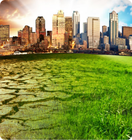

Service Sector

Water Resources

Water Supply & Sanitation

Enviromental Assessment

Agriculture & Rural
| SL | COUNTRY | EXECUTING AGENCY | PROJECT | PERIOD | FUNDUNG AGENCY |
|---|---|---|---|---|---|
| 01 | Tajikistan | State Unitary Enterprise "Khojagii Manzilii Kommunali" | Grant 0352-TAJ: Building Climate Resilience in the Pyanj River Basin Implementation Support to State unitary enterprise for housing and communal services (KMK), Rural Water Supply | 2015-2018 | Asian Development Bank(ADB) |
| 02 | Tajikistan | Executive Body of the State Power of the City of Dushanbe | Dushanbe Solid Waste Management Project | 2010-2014 | EBRD (European Bank for ReconstrucTion & Development) |
| 03 | Tajikistan | SUE Khojagii Manziliyu Kommunali in KurganTyube City, Tajikistan | Kurgan-Tyube Solid Waste - Project Implementation Support, Engineering Design Services and Contract Supervision, Tajikistan | 2015-2018 | EBRD |
| 04 | Tajikistan | Dushanbe Water Supply PMU, Dushanbe | Detailed Design, Bidding Documents and Supervision of Works under Dushanbe Water Supply Project | 2007-2010 | Islamic Dev. Bank (IDB) |
| 05 | Tajikistan | Municipal Infrastructure Development Project (AF MIDP) | Additional Financing for Municipal Infrastructure Development Project | 2013-2015 | IDA |
| 06 | Afghanistan | PMU, Municipal Infrastructure Development Project | Water Distribution System Leak Detection Program under Municipal Infrastructure Development Project | 2007-2009 | World Bank (WB) |
| 07 | Afghanistan | Ministry of Urban Development and Housing (MUDH) | Extension of the Water Supply System of Kabul (Water Supply Kabul-II), Afghanistan | 2005-2010 | KfW-Entwick lungsban |
| 09 | Somaliland | Afghan Association Coordination Unit (AACA) | Re-establishment & Operation of Water Supply and Sanitation Services in Selected Provincial Towns | 2015-2018 | International Development Association (IDA) |
| 10 | Sudan | Hargeisa Municipality , Republic of Somaliland | Private Sector Development Reengagement Phase II, Consulting Services Solid Waste Management, Somaliland | 2015-2018 | World Bank |
| 11 | Vietnam | Institutional Capacity Building for Improvement Access to Water & Sanitation in Port Sudan | Consultant Services for Design & Supervision of Emergency Water Supply Rehabilitation Works & Construction of Septage Treatment Plant | 2015-2018 | ADB |
| 12 | Bangladesh | The government of Socialist, Vietnam | Emergency Rehabilitation of Calamity Damage Project Vietnam (Sub-consultancy) | 2015-2018 | ADB |
| 13 | Bangladesh | IFC-World Bank | Wastewater Management Facilities for Gazipur City Corporation | 2015-2018 | Groom |
| 14e | Bangladesh | LGED | Technical Audit (Technical, Fiduciary & Safeguard) Consultant under Program for Supporting Rural Bridges (SupRB) | 2015-2018 | IDA |
| 15 | Bangladesh | Department of Public Health Engineering (DPHE) | Technical Support Unit and Related Services under Bangladesh Municipal Water Supply and Sanitation Project (30 Pourashavas, Package No: S-14) | 2015-2018 | IDA |
| 16 | Bangladesh | DPHE | Supervision and Technical Support of Cox's Bazar District's Ukhia and Tecknaf Upazilla's Water Supply and Sanitation Activities' Emergency Assistance Project, DPHE, Dhaka (Sub-consultancy) | 2015-2018 | ADB |
| 17 | Bangladesh | Chattogram Water Supply and Sewerage Authority (CWASA) | Engineering Design and Construction Supervision of Project for Establishment of Sewerage System in Chattogram Metropolitan (Phase-1) | 2015-2018 | GOB |
| 18 | Bangladesh | Department of Public Health Engineering (DPHE) | Design and Supervision of Water Supply Systems & Environmental Management (Drainage, Faecal Sludge and Solid Waste Management) in 32 Pourashavas, Dhaka | 2015-2018 | GOB |
| 19 | Bangladesh | Mongla Port Authority | Installation of Surface Water Treatment Plant of Mongla Port Authority | 2015-2018 | GOB |
| 20 | Bangladesh | Dhaka WASA | Consultancy Services for Reviewing of the Design, Construction Supervision of EPC/Turnkey Contract & Contract Management for 500 MLD Capacity of Dasherkandi Sewage Treatment Plant Project. | 2015-2018 | China EXIM Bank |
Copyright © 2023 - BETS Consulting Services Ltd. , All Rights Reserved